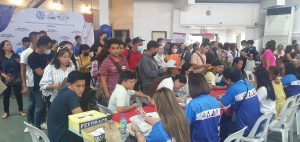

Philippine Standard Time: Sunday, September 22, 2024, 2:00 PM

by: SR Pasaporte
In a remarkable collaboration between the Public Employment Service Office (PESO) Davao City and the Technical Education and Skills Development Authority (TESDA), a significant and massive Job Fair was held at the Almendras Gymnasium last August 25, 2023. This event, held as part of the celebration of National Tech-Voc Day showcased the pivotal role of technical and vocational education and training in connecting job seekers with employers. One of the most striking aspects of the Davao City Job Fair 2023 was the sheer number of employment opportunities it offered and different live demonstrations of TESDA skills.
Local employers opened their doors to 3,509 job vacancies, spanning various industries and roles. In addition to this, 1,350 overseas positions were made available through 9 hiring agencies. This diversity of job opportunities catered to a wide range of skill sets and aspirations, providing job seekers with a chance to explore both local and international career prospects. The impact of the event was evident in the overwhelming response it garnered from job seekers. A total of 1,147 applicants from various backgrounds and skill sets, are all eager to embark on their career journeys, reflecting the high demand for employment in the region. This strong turnout demonstrated the eagerness of the local workforce to explore new opportunities and contribute to the growth of Davao City. One of the most promising aspects of this event was the “Hired On The Spot” program, which saw 62 lucky individuals securing immediate employment offers. Beyond the immediate hiring, 511 applicants progressed to further interviews, indicating the potential for even more employment success stories in the near future. These interviews provide job seekers with a second chance to showcase their skills and qualifications to prospective employers.
As part of the celebration of National Tech-Voc Day, the Job Fair also featured live demonstrations of various TESDA skills, including bartending. These demonstrations showcased the practical and valuable skills that job seekers could acquire through technical and vocational training, allowing attendees to witness the practical applications of these skills in real-world settings.
The decision to hold the Job Fair on National Tech-Voc Day was both symbolic and strategic. It was an opportunity to commemorate the importance of technical and vocational education and training in empowering individuals with practical skills for the workforce. The event embodied the spirit of this celebration by bridging the gap between education and employment, showcasing the practicality and relevance of tech-voc skills.